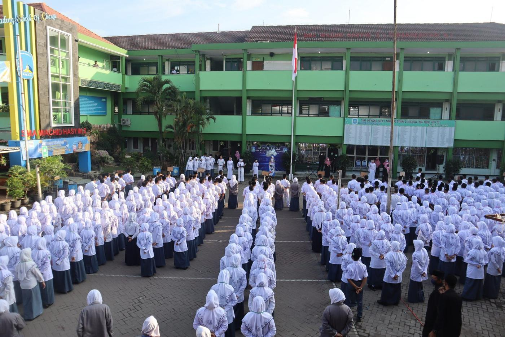
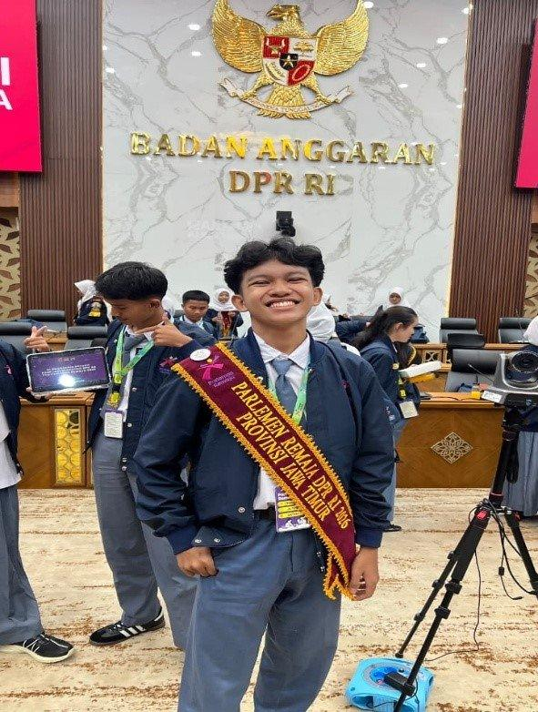
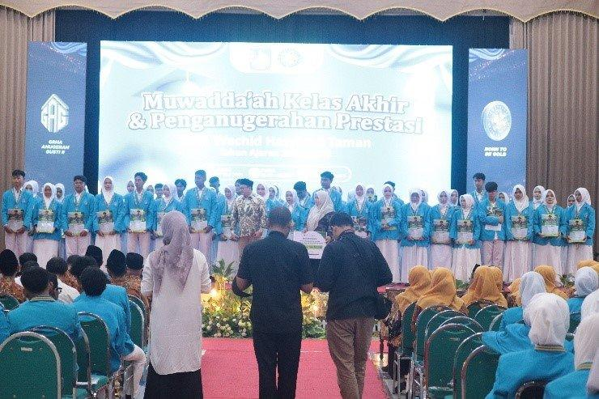
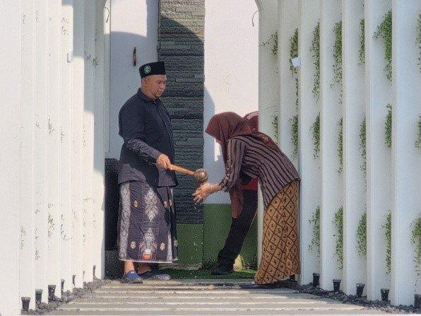
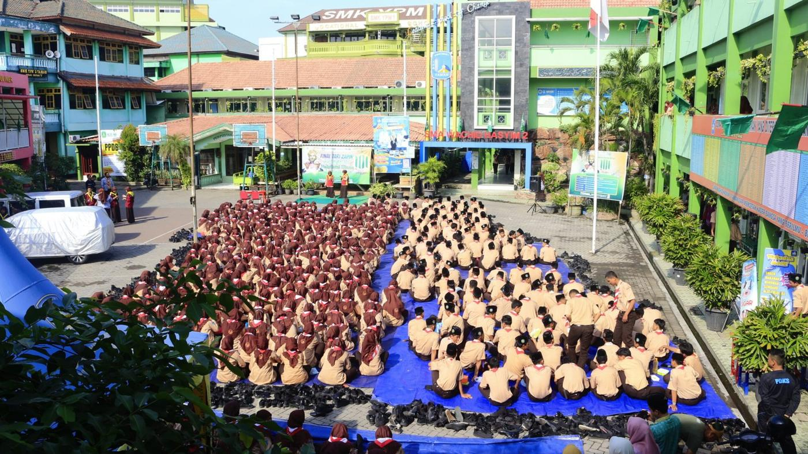
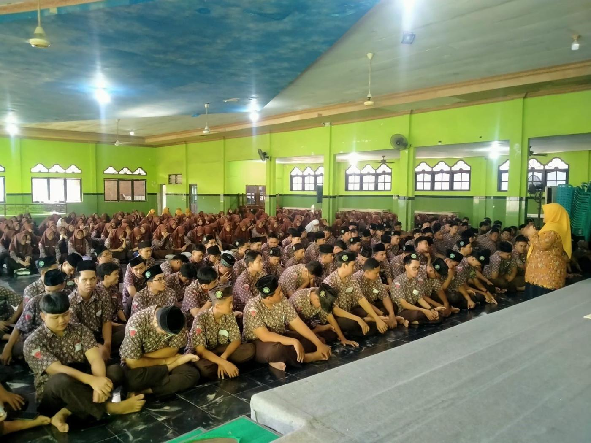
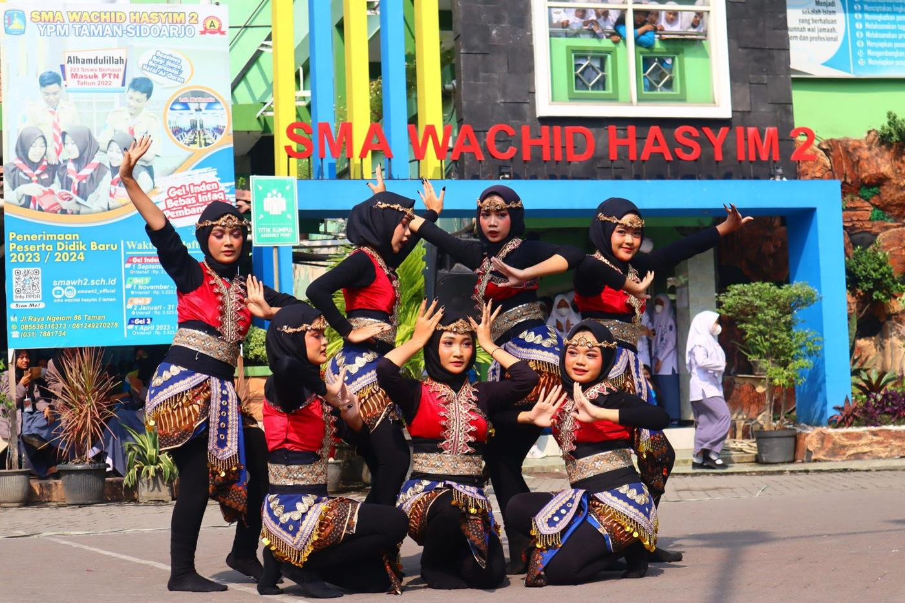

Kelas Intensif & Persiapan PTN
Kelas ber-AC dengan multimedia di lantai tiga, pelajaran tambahan, try out rutin dan kerja sama dengan lembaga bimbingan belajar.

Sekolah akan membantu kamu berkuliah di universitas impian. Tahun 2025/2026, 259 siswa SMA Wachid Hasyim 2 lolos ke 21 PTN, di antaranya UGM, ITS, UNAIR, UNESA dan UPN.

SMA Wachid Hasyim 2 Taman adalah sekolah menengah umum yang dikelola oleh Yayasan Pendidikan dan Sosial Ma'arif (YPM), yayasan yang berorientasi pada nilai dan amaliah Ahlussunnah wal Jama'ah (NU).
Sekolah menggunakan kurikulum pendidikan nasional, lalu menambahkan bidang studi agama Islam seperti Al-Qur'an, Aqidah, Fiqih, SKI dan Aswaja tanpa mengurangi target kurikulum nasional.
Itulah nilai lebih SMA Wachid Hasyim 2 dibanding sekolah umum lainnya: siswa siap bersaing secara akademik sekaligus berakhlakul karimah.

“Menjadi sekolah Islam yang berhaluan Ahlussunnah wal Jama'ah, modern dan profesional.”
Yayasan Pendidikan dan Sosial Ma'arif Sepanjang berdiri tahun 1964, digagas KH. M. Hasyim Latief bersama para sesepuh NU Sepanjang dan Sidoarjo untuk mengangkat kualitas SDM masyarakat Nahdliyin.
Saat mendirikan SMA, YPM bergabung dengan Yayasan Wachid Hasyim Surabaya. Sebagai penghormatan atas jasa baik itu, nama Wachid Hasyim diabadikan sebagai nama sekolah.
| Nama Sekolah | SMA Wachid Hasyim 2 Taman |
| Alamat | Jl. Raya Ngelom 86, Taman, Sidoarjo 61257 |
| Telepon | (031) 7881734 |
| Nomor Sekolah | E.03144001 |
| Izin Pendirian | No. 03885/I04.7.4/97 |
| Status | Terakreditasi A |
| Yayasan | Yayasan Pendidikan dan Sosial Ma'arif |
| Ketua Yayasan | Ir. H. Ahmad Makki, M.T. |
| Kepala Sekolah | Ummi Nahdliyah, S.Pd.I., M.Pd.I. |
Program akademik, keagamaan dan pengembangan diri yang berjalan setiap tahun ajaran.
Kelas ber-AC dengan multimedia di lantai tiga, pelajaran tambahan, try out rutin dan kerja sama dengan lembaga bimbingan belajar.
Doa awal dan akhir pelajaran, Juz Amma dan Yasin, sholat dhuha dan istighosah bersama, serta pengajian rutin setiap akhir bulan.
Hari berbahasa asing untuk melatih percakapan sehari-hari, didukung guru Bahasa Inggris, Jepang dan Arab.
Laboratorium komputer dan multimedia, laptop dan proyektor untuk pembelajaran ICT di kelas.
Introduction to Basic Competencies selama sekitar tiga bulan: storytelling, BTQ, pencak silat dan pembentukan karakter.
Pameran kampus yang digagas alumni yang kini kuliah di berbagai perguruan tinggi ternama, digelar di halaman sekolah.
Tahun ajaran 2025/2026, siswa SMA Wachid Hasyim 2 berprestasi dari tingkat kecamatan, kabupaten, provinsi, nasional hingga internasional: KTI, konten video, drama musikal, PMR, duta sejarah, sepak bola, bulu tangkis, pencak silat dan lainnya.

PrestasiSiswa kelas XII-F1 ini menjadi siswa pertama SMA Wachid Hasyim 2 yang lolos, setelah melewati seleksi CV, esai dan video kampanye, psikotes, serta wawancara.

Kelulusan
Kelulusan Akademik
Akademik




Pendaftaran bisa ditutup sewaktu-waktu apabila kuota terpenuhi. Biaya formulir Rp250.000, belum termasuk seragam.